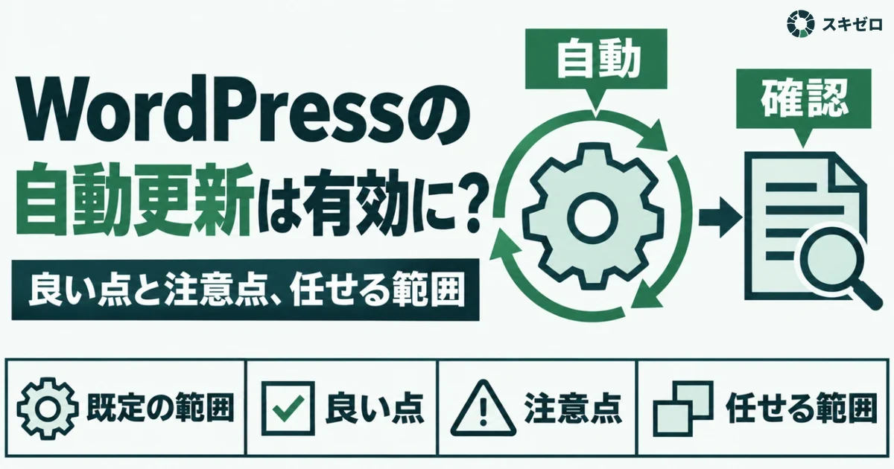
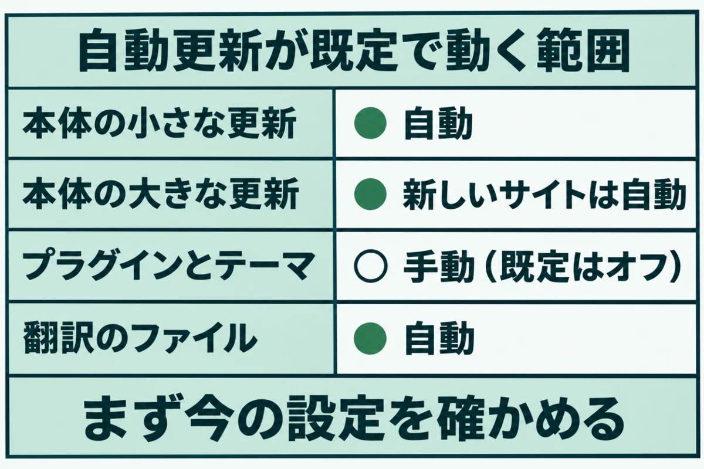
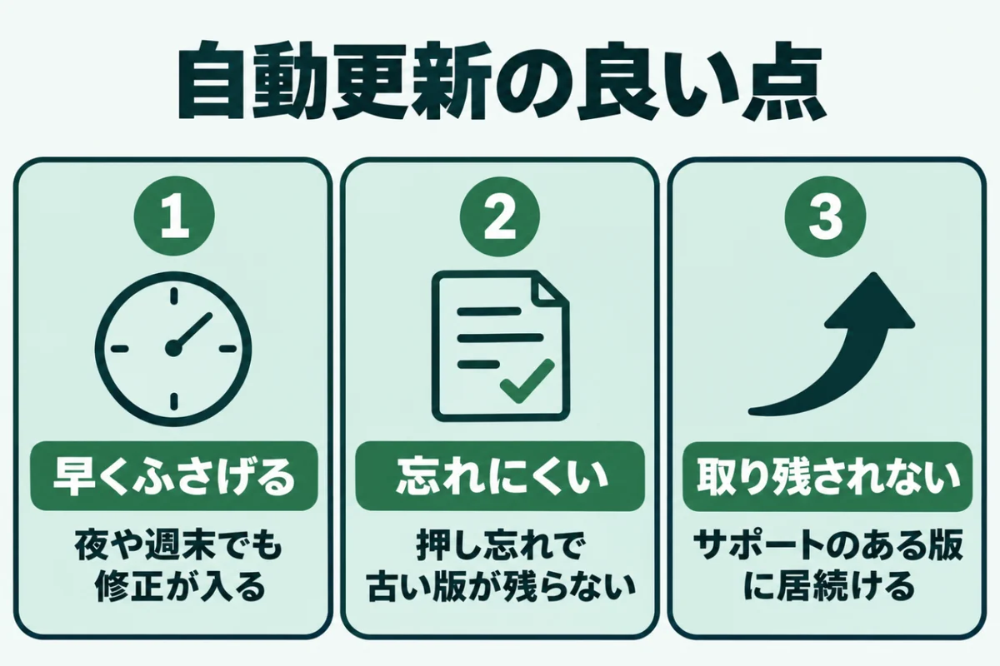
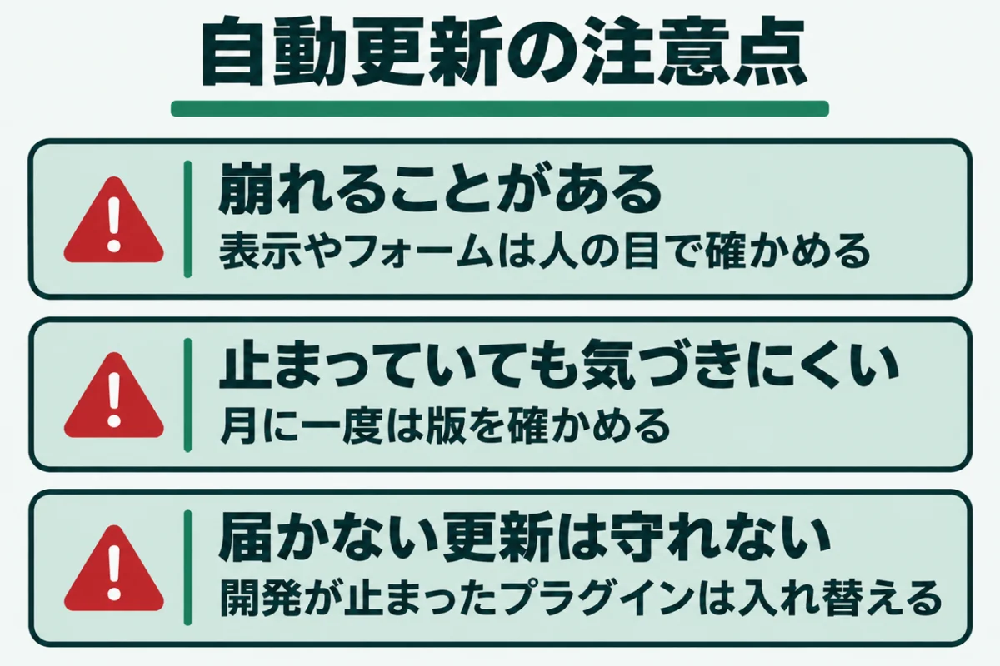
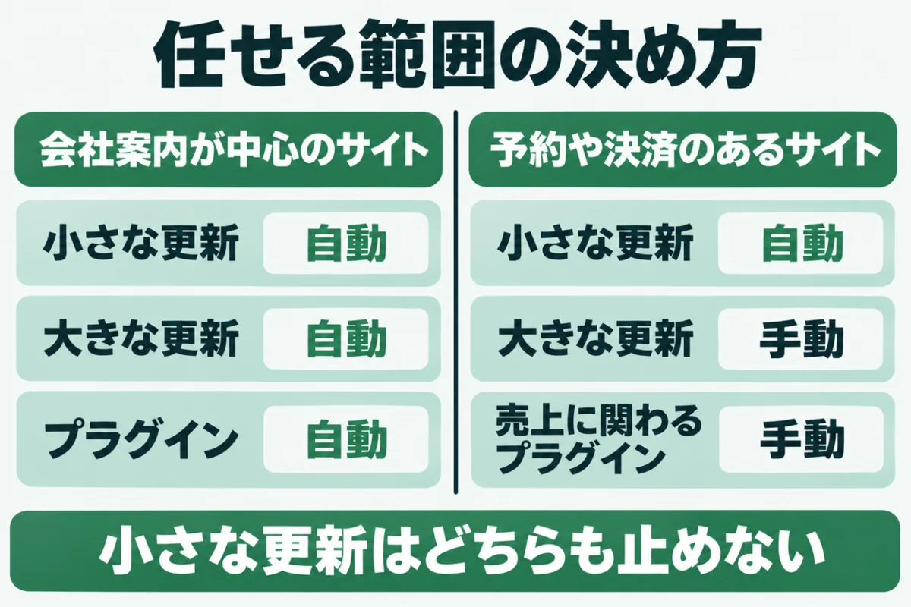
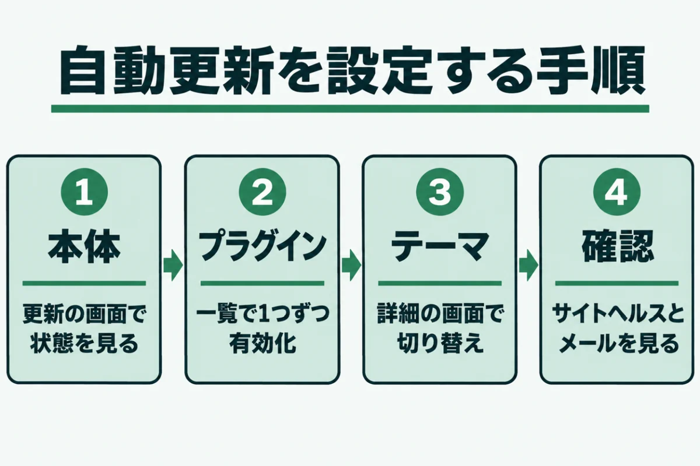

WordPressの自動更新は有効にすべき？良い点と注意点任せる範囲の決め方と確かめ方

「WordPressの自動更新は、有効にして本当に大丈夫なのか」と迷っていませんか？
自動更新は、弱点をふさぐ更新を人の手を待たずに入れてくれる仕組みです。一方で、更新のあとに表示が崩れたり、止まっているのに気づかなかったりする場面もあります。
この記事では、WordPressの自動更新の良い点と注意点を整理しました。既定で動く範囲、任せる範囲の決め方、設定の手順まで順番に紹介します。
内容は、WordPressの公式ドキュメントと2026年の注意喚起をもとにしました。自社のサイトでどこまで任せるかを決める材料にしてください。
WordPressの自動更新とは？既定で動く範囲

WordPressの自動更新は、更新の種類ごとに既定の動きが違います。何が自動で、何が手動なのかを先に知っておきましょう。
WordPressは1日に2回、新しい版が出ていないかを自分で確かめます。見つかった更新のうち、自動の対象になっているものだけが入る作りです。2026年11月時点の最新版は7.1.5で、11月18日に公開されました。
本体は小さな更新と大きな更新で扱いが違う
WordPress本体の更新には2種類あります。7.1.4から7.1.5のような小さな更新は、不具合や弱点を直すためのものです。こちらは既定で自動になっています。7.1から7.2のような大きな更新は、機能の追加を含むものです。公式の説明では、5.6以降に新しく入れたサイトは大きな更新も自動とされています。それより前からあるサイトは、管理者が切り替えない限り小さな更新だけが自動です。翻訳のファイルは、どちらのサイトでも自動で入ります。
プラグインとテーマは既定でオフ
プラグインとテーマの自動更新は、WordPress 5.5から管理画面で切り替えられます。既定ではオフなので、自分で有効にしない限り手動のままです。何も設定していないサイトでは、プラグインの更新は人が押すまで入りません。例外もあります。重大な弱点があるプラグインには、WordPress.orgが更新を配ることがあるのです。ただし対象はごく一部なので、当てにはできないでしょう。サーバー会社の簡単インストールで入れたサイトは、初期の設定を一度確かめておいてください。
WordPressの自動更新を有効にする良い点3つ

WordPressの自動更新を有効にする一番の理由は、攻撃が始まるまでの時間が短くなったことです。人が気づいてから更新するのでは、間に合わない場面が増えました。
小さな会社では、ホームページの担当がほかの仕事と兼ねていることが多いでしょう。毎日管理画面を開けない会社ほど、自動更新の利点は大きくなります。良い点を3つに分けて見ていきましょう。
① 弱点をふさぐまでの時間が短くなる
Patchstackの報告書によると、2025年に見つかった弱点は1万1,334件でした。影響の大きい弱点のおよそ半分は、24時間以内に攻撃に使われています。2026年7月には、WordPress本体にも重大な弱点が見つかりました。修正版の7.0.2が出てから約90分で、攻撃の試みが観測されたのです。早いものは公開から数時間で攻撃が始まるのが今の状況といえます。自動更新なら、担当者が休んでいる夜や週末でも修正が入るでしょう。
- 参考：State of WordPress Security in 2026｜Patchstack
- 参考：Ninety minutes: watching attackers weaponize the WordPress core RCE｜Patchstack
② 更新の手間と忘れが減る
更新の通知に気づいても、忙しいと後回しになりがちです。プラグインの数が多いサイトほど、更新の知らせは頻繁に届くでしょう。自動更新を有効にすると、押し忘れで古い版が残ることが減ります。更新が入ると、管理者のメールアドレスに結果が届く仕組みです。成功したものと失敗したものが分かるので、届いたメールは読み流さないでください。メールが届かないサイトは、管理者のアドレスが古いままになっていないかを確かめましょう。
③ サポートのある版に居続けられる
WordPressが正式にサポートしているのは、最新の版だけです。古い版にも好意で修正が配られていますが、いつまで続くかは約束されていません。実際に、4.1から4.6への修正の配布は2025年7月で終わりました。大きな更新も自動なら、古い版に取り残されません。何年も更新せずに差が開くと、一気に上げるのは難しいでしょう。そうなったときの進め方は、別の記事で紹介しています。WordPressを何年も更新していないときの安全な更新手順｜一気に上げずに段階的にを見てください。
WordPressの自動更新の注意点3つ

WordPressの自動更新は、有効にしたら終わりという仕組みではありません。任せきりにすると、困ったときに気づくのが遅れます。有効にする前に、起こりうることを知っておいてください。
注意点は、更新のあとの崩れ、自動更新そのものの停止、更新が届かないプラグインの3つです。どれも、知っていれば備えられます。順に確かめていきましょう。
① 更新のあとに表示や機能が崩れることがある
更新で一番心配なのは、サイトが壊れることでしょう。WordPress 6.6には、失敗した更新を元に戻す仕組みが入りました。プラグインの自動更新で致命的なエラーが出ると、前の版に戻ります。ただし、確かめるのはトップページでエラーが出ないかだけです。表示の崩れやフォームの不具合は見つけられません。予約や決済のように止まると困る機能は、更新のあとに人の目で確かめてください。それでもエラーが残ったときは、管理者に復旧用のリンクがメールで届きます。
② 動いていないことに気づきにくい
自動更新は、有効にしていても動いていないことがあります。更新の確認は、サイトにアクセスがあったときに動く予約の仕組みに頼っているからです。アクセスが少ないサイトでは、確認が遅れるでしょう。ファイルを書き換える権限がない場合や、開発用の「.git」フォルダがある場合も止まります。IPAは2026年7月の注意喚起で、自動更新が無効だったり失敗していたりする場合があると伝えました。月に一度は、管理画面で今の版を確かめてください。
③ 更新が届かないプラグインは守れない
自動更新が入れてくれるのは、開発者が出した修正だけです。Patchstackの報告書では、弱点の46%は公表の時点で修正版が出ていませんでした。開発が止まったプラグインには、いつまで待っても更新が届きません。運営者の自社サイトの点検でも、配布が止まったプラグインが残っていました。自動更新を有効にしていても、こうしたプラグインは古いままです。消すかどうかの判断の基準は、WordPressの使っていないプラグインは削除すべき？判断の基準と安全な消し方にまとめました。
WordPressの自動更新を任せる範囲の決め方

WordPressの自動更新は、全部か無しかで決める必要はありません。更新の種類とサイトの役割に合わせて、任せる範囲を分けるのが現実的です。
判断の軸は2つあります。止まったときの困り具合と、更新のあとに確かめる人がいるかどうかです。この2つで、自社のサイトがどちらに近いかを考えてみましょう。迷ったら、守りを優先して自動を多めにしておくと安心です。
小さな更新は止めない
本体の小さな更新は、どのサイトでも自動のままにしておきましょう。弱点の修正が中心で、機能の変更が少ない更新だからです。WordPressの公式も、自動更新を止めないよう強く勧めています。2026年7月の7.0.2では、影響のある版に強制の更新が配られました。それほど急ぐ修正が、小さな更新には含まれているのです。設定ファイルですべての自動更新を止めているサイトは、止めた理由を確かめて見直してください。
大きな更新とプラグインはサイトの役割で決める
会社案内が中心のサイトなら、大きな更新もプラグインも自動にしてよいでしょう。止まっても影響が小さく、古いまま残る危険のほうが大きいからです。予約、決済、会員の機能があるサイトは、少し慎重に考えます。売上に関わるプラグインは手動で更新すると決めておくと安全です。その場合は、更新を確かめる曜日と担当を決めてください。たとえば月曜の朝に見る、と具体的に決めるのがこつです。手動にしたまま誰も見ない状態が、一番危ない形になります。
自動にする前に戻せる備えを確かめる
WordPressの公式ドキュメントは、自動更新を有効にする前の準備を勧めています。うまくいかないときに、前の状態へ戻せるようにしておくことです。エックスサーバーは、自動バックアップを14日分保持しています。一部の古いサーバーでは7日分です。どこに何日分の控えがあるかを先に確かめましょう。サーバーによっては、バックアップが申し込みの要る追加機能になっています。戻す手順も、一度は試しておくと安心です。
WordPressの自動更新を設定する手順

WordPressの自動更新の設定は、管理画面だけで切り替えられます。特別なプラグインは必要ありません。作業そのものは数分で終わるでしょう。
設定を変える前に、任せる範囲と控えの有無を決めておきましょう。作業は管理者の権限でログインして進めます。制作会社に管理を任せている場合は、どの設定になっているかを先に聞いておくと安心です。
本体の設定は「更新」の画面で確かめる
管理画面の「ダッシュボード」から「更新」を開きます。画面の上のほうに、今の自動更新の状態が文章で表示されているはずです。小さな更新だけが自動のサイトには、切り替えのリンクが出ます。文言は「すべての新しいバージョンに対する自動更新を有効にします」という内容です。これを押すと、大きな更新も自動になります。設定ファイルに書かれた指定は、この画面の設定より優先される決まりです。制作会社が設定ファイルで固定していないかも、あわせて確かめておきましょう。
プラグインとテーマは1つずつ選ぶ
プラグインは、「プラグイン」の一覧にある「自動更新」の列で切り替えます。「自動更新を有効化」を押すと、そのプラグインだけが対象になる仕組みです。全部を一度に有効にせず、1つずつ選べます。まとめて切り替えたいときは、チェックを入れて一括操作を使ってください。テーマは、テーマの詳細の画面で1つずつ切り替えます。使っていないテーマやプラグインは、自動更新を考える前に削除しておくと管理が楽になるでしょう。
動いているかを確かめる
設定のあとは、実際に動いているかを確かめます。「ツール」の「サイトヘルス」を開き、予約の仕組みや更新に関する警告が出ていないかを見てください。更新が入ると、管理者のアドレスにメールが届きます。新しい版が出たのにメールが来ないときは要注意です。エックスサーバーやロリポップも、2026年のお知らせで確認を呼びかけました。自動更新が有効な場合でも、更新が完了しているかを管理画面で見るよう案内しています。
URLを入れるだけで、WordPress本体やPHPの版、プラグインの状態など8項目を無料で判定します。登録はいりません。
無料で診断するWordPressの自動更新に関するよくある質問
自動更新で大きな更新が入ると、サイトが壊れませんか？
壊れる可能性はゼロではありません。古いテーマやプラグインが新しい版に対応していないと、エラーが出ることがあります。心配なときは、本体は小さな更新だけを自動にし、大きな更新は手動で進めてください。切り替えは、「更新」の画面のリンクから行えます。ただし、手動にするなら更新を忘れない仕組みが必要です。新しい版が出てから数週間以内に上げる、と決めておくとよいでしょう。
自動更新を有効にしたのに、更新されていないのはなぜですか？
理由はいくつか考えられます。アクセスが少なくて確認が遅れている場合が1つ目です。ファイルを書き換える権限がない場合と、設定ファイルで止められている場合もあります。「ツール」の「サイトヘルス」に警告が出ていないかを見てください。新しいPHPが必要な更新は、サーバーのPHPが古いと入りません。原因が分からないときは、サーバー会社か制作会社に相談しましょう。
自動更新のメールが多くて困ります。止めてもよいですか？
メールは、更新が入ったことを知る数少ない手がかりです。止めてしまうと、失敗に気づけなくなります。件数が多いときは、専用のフォルダに振り分けて、失敗の知らせだけ目に入るようにしましょう。成功と失敗で件名が違うので、振り分けの条件に使えます。使っていないプラグインを減らすと、メールの数そのものも減るはずです。
制作会社に保守を頼んでいる場合も、自動更新は必要ですか？
保守契約の中身によります。更新の作業が契約に入っていて、弱点が出たときにすぐ動いてもらえるなら、手動でも問題ありません。月に一度まとめて更新する契約なら、間が空く分だけ危険が残ります。本体の小さな更新だけは自動にしておけないかを、制作会社に相談してみてください。勝手に設定を変えると検証の段取りが崩れるので、先に一声かけるのが安全です。
自動更新を有効にすれば、ほかの対策はいりませんか？
自動更新は土台であって、すべてではありません。開発が止まったプラグインや、弱いパスワードは自動更新では直らないからです。バックアップ、ログインの守り、使わないプラグインの整理もあわせて進めましょう。今の版が外からどう見えているかは、スキゼロの無料簡易診断で確かめられます。URLを入れるだけで、8項目を判定する仕組みです。
まとめ
WordPressの自動更新は、本体の小さな更新と翻訳が既定で自動です。新しく入れたサイトでは、大きな更新も自動になっています。プラグインとテーマは既定で手動です。攻撃が始まるまでの時間が短くなった今、小さな更新を止める理由はほとんどありません。
大きな更新とプラグインは、サイトの役割に合わせて任せる範囲を決めましょう。有効にしたあとも、動いているかを月に一度確かめることが大切です。
まずは、今の状態を知るところから。
URLを入れるだけで、数十秒で判定が出ます。登録はいりません。